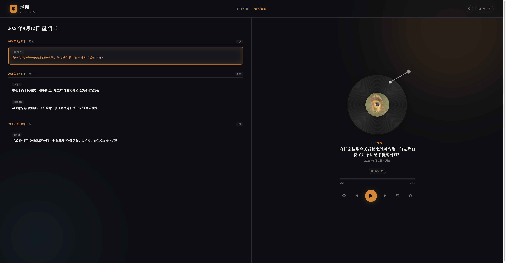
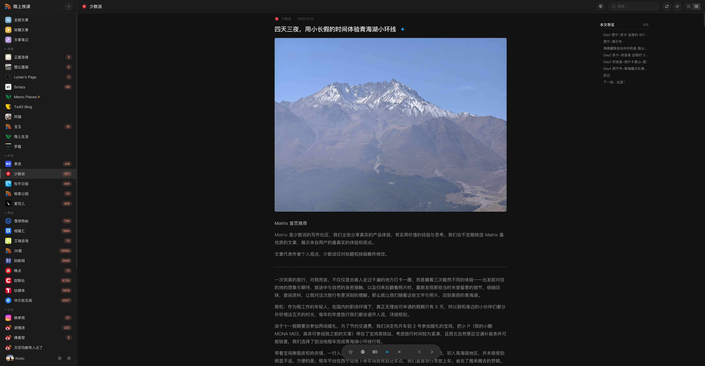
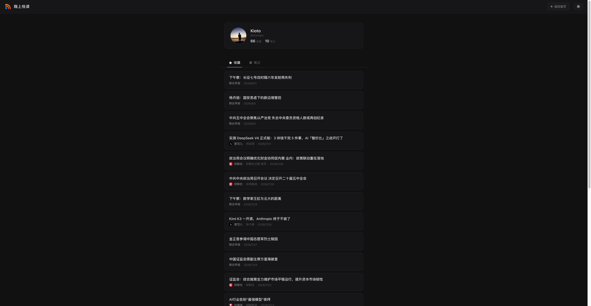

阅读是进步的阶梯，拾级而上，遇见更好的自己。 Reading is the ladder of progress — climb one article at a time.
账号 demo / 密码 demodemo
为想要完全掌控阅读体验的人而生——无广告、无追踪、无妥协。 Built for people who want full control. No ads, no tracking, no compromises.
支持注册、登录和独立阅读进度。收藏文章、撰写笔记，构建你自己的阅读档案。首位注册用户自动成为管理员。
一键生成文章摘要，兼容所有 OpenAI 格式 API。支持 OpenAI、Azure、阿里云百炼、Ollama 或本地大模型。
收藏一篇文章，階上悦读自动通过 MiMo TTS 生成高质量音频。通勤路上、运动时，随时收听你的阅读列表。
报纸式精选阅读，更以听为主：随机内容搭配 TTS 语音合成，像收听一档专属播客——通勤、运动、睡前，闭上眼睛也能读完一天。
自动提取文章小标题生成目录，锚点跳转、阅读位置一目了然。再长的文章，也能从容读完。
毛玻璃风格界面，自动跟随系统主题。在深色与浅色模式间无缝切换——你的眼睛会感谢你。
内置繁简中文一键切换。在你偏好的字体下阅读——转换在渲染时完成，不会修改你的原始数据。
兼容市面主流 RSS 阅读器，如 Reeder、Unread 等可直接对接。桌面、平板、手机——你选择自己喜欢的阅读工具。
一条命令，即刻上线。支持 amd64 / arm64 双架构，数据持久化在本地，无需任何外部服务依赖。
随机精选你的阅读列表，TTS 语音合成缓缓朗读——封面、专栏、头条，都在耳边展开。通勤、运动、睡前，闭上眼睛也能读完一天。 Randomly curated from your feeds and read aloud by TTS — headlines, columns, and covers unfold in your ears, wherever you are.
↑ 声闻模式示意 —— 你的订阅源，读给你听
实际界面截图，所见即所得。 Real screenshots from the running app. What you see is what you get.



没有复杂的构建流水线，没有前端框架疲劳。干净、可维护的代码，所见即所得。 No complicated build pipelines. Clean, maintainable code that just works.
只需一条命令。数据持久化在本地，无需任何外部服务。 One command is all it takes. Data stays local — zero external dependencies.
# 一条命令上线 docker run -d --name upstairs-reader \ -p 5321:5321 \ -v $(pwd)/data:/data \ -e DB_PATH=/data/rss.db \ ztshia/upstairs-reader:latest查看 Docker Hub →
# 克隆仓库并启动 git clone https://github.com/ztshia/upstairs-reader.git cd upstairs-reader pip install -r requirements.txt python app.py打开 http://localhost:5321 →
💡 数据保存在 $(pwd)/data/rss.db；Linux 服务器如遇权限问题：chown -R 1000:1000 data。首位注册用户自动成为管理员。
Web 界面能做的，API 都能做。集成、扩展、自动化，一切尽在掌握。 Everything the web UI does is available through the API. Integrate, extend, automate.
VPS、家庭服务器、NAS……同一套代码，一致的体验。 VPS, home server, or NAS — same code, same experience.
拉取镜像 docker run 一条命令，用 nginx 或 Caddy 反向代理将域名指向 localhost:5321，再通过 Let's Encrypt 一键配置 HTTPS。
镜像支持 amd64 / arm64 双架构——树莓派、迷你主机、旧笔记本，只要在局域网内，就能为你提供阅读服务。
支持 Docker 的 NAS 直接拉取镜像；或安装 Python 3，使用国内镜像加速 pip 安装依赖后 python app.py。数据完全存储在你的硬件上，隐私无忧。